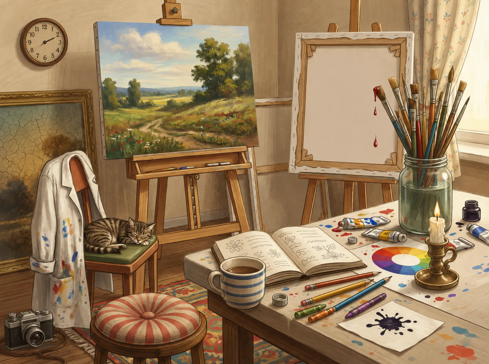
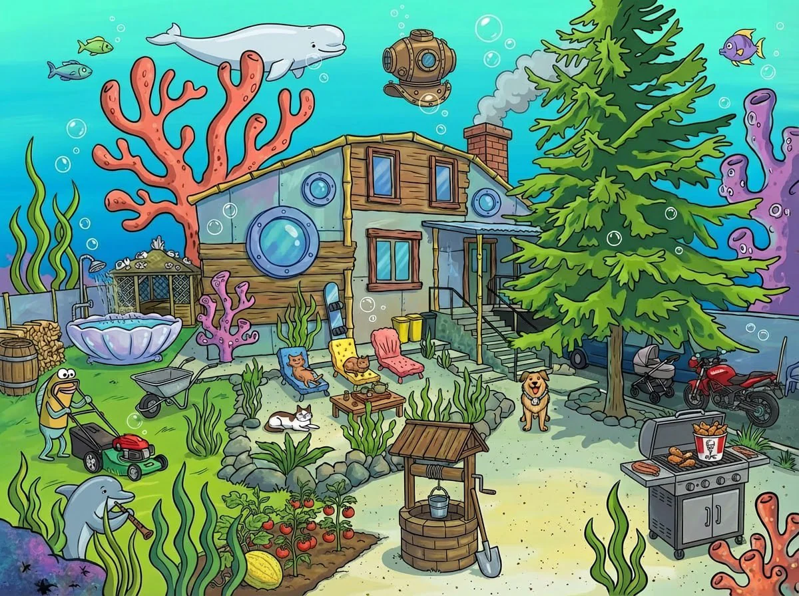

{kind=link}
01
Explore the picture
There’s a little world waiting for you. Objects, animals and tiny details — discoveries can be hiding anywhere.
A GAME OF OBSERVATION & IMAGINATION
Cat, camera, candle… What else can you spot? Find things starting with one letter in a picture full of stories. Two minutes you’ll want to play again.
Free · No sign-up · Right here

01 — EASY TO LEARN. HARD TO STOP LOOKING.
Everything you need is in the picture. Just look a little closer.
There’s a little world waiting for you. Objects, animals and tiny details — discoveries can be hiding anywhere.
Name what you see using nouns. For the letter C, you might find a cat, a camera or a candle.
Write your words, then compare discoveries. One object earns one point, even if you have two names for it.
02 — A LITTLE CHALLENGE, RIGHT NOW
Two pictures from our collection, adapted for English. Pick a scene and put your eye for detail to the test.
Press Start, explore the picture and type your discoveries. You can add several words separated by spaces or commas.
Type nouns starting with the chosen letter. Press Enter to add them.
Every picture has more than one reading. Explore the examples and see what else you can find.
Loading the picture…
Your discoveries will appear here
This demo uses a fixed letter and a curated answer list. A word missing from the list isn’t necessarily wrong. Playing with friends? Discuss unexpected discoveries together.
Changing language starts a fresh round.
03 — AN EXCUSE TO GET TOGETHER
Bring a picture, hand out some paper and start a timer. Add curiosity, friendly competition and a few “How did I miss that?!” moments.
Mix up teams around the tables and give guests an easy way to meet. A custom picture can hide little moments from the couple’s story.
A natural conversation starterWork favorite places, hobbies and inside jokes into the game. The illustration becomes both a party activity and a keepsake.
Their story takes center stagePlay it like a board game: everyone writes their own words, then compares answers and makes a case for their most surprising finds.
Paper, pencils & friendly rivalryLook together with kids, break the ice at a team meetup or practice English vocabulary. Choose a letter and a pace that works for you.
Around one table or one screen
04 — A PICTURE WITH A LITTLE OF YOU IN IT
The house where you gather. Your favorite dog. That trip you still talk about. We’ll turn those familiar details into a personalized picture to play with.
Tell us who it’s for, what you’re celebrating and which details matter. We’ll discuss the scope and price with you personally.
The demo runs right in your browser. The full Russian-language game is on Telegram: open the bot and send /play.
Use nouns for things you can see in the picture. Proper names don’t count, and different names for the same object earn just one point. The demo checks a small curated list.
Absolutely, especially when playing together. The demo sets a letter to help you get started. In the Telegram game, your answers choose the letter: the one with the most unique words becomes your result.
MORE TO DISCOVER ON TELEGRAM
Explore new pictures, compare discoveries and find another reason to look a little closer. Our main Telegram game and community are in Russian.
Play on Telegram{kind=link}